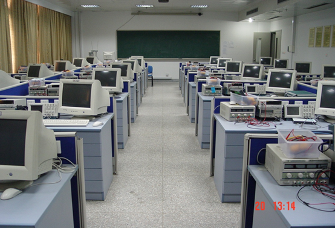
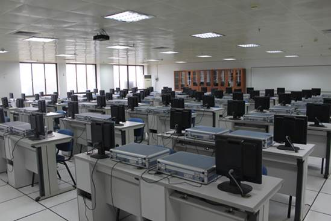
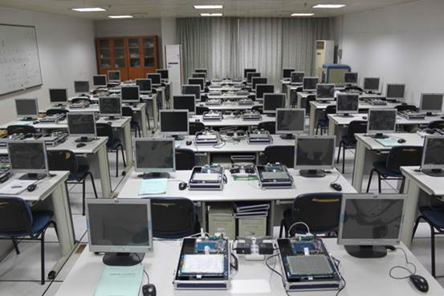
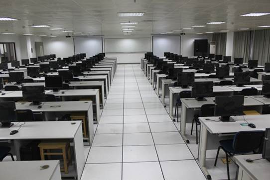
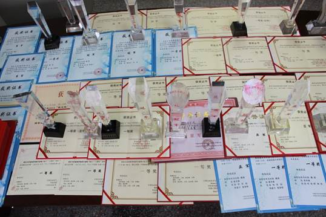
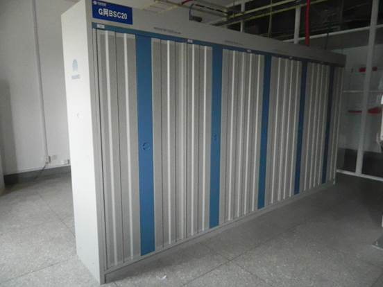
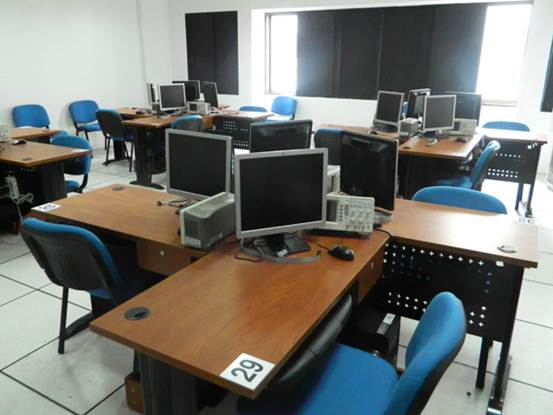
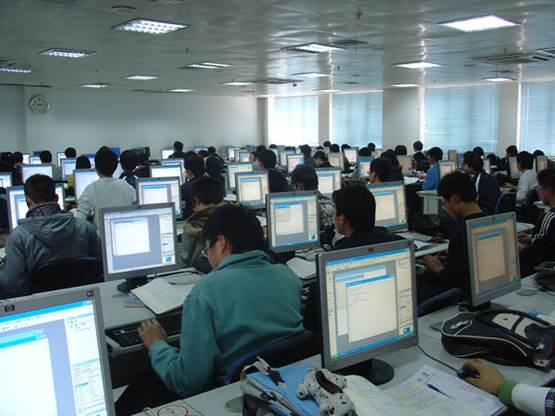

实验室介绍
信息科学与工程学院以培养应用型、创业型本科人才为目标，依托南京大学相关专业，在结合自身办学特色的基础上，将学院所辖专业有机融合，目前建成有特色、设备先进的教学实验室六个：电工电子实验教学中心（含模拟电路实验室、数字电路实验室、电子电路CAD 实验室、电子技术综合实验室、通信实验室、电工实验室）、大学物理中心（含光学实验室、力学实验室、电学实验室、磁学实验室）、计算机科学与技术专业实验室（含嵌入式系统实验室、计算机组成原理实验室、多媒体技术实验室、微处理器与应用实验室、信息管理实验室）、智能机器人实验室、大学计算机基础实验中心和现代通信技术实验室。
1、电子电工实验中心
南京大学金陵学院信息科学与工程系电工电子实验室位于南京大学浦口校区玉辉楼B3区，现有六个实验室，它们是电工实验室、模拟电路与数字电路实验室、多媒体技术实验室、嵌入式微处理器应用实验室、通信原理实验室、高频实验室。 现有实验设备： 电工实验室实验装置30套，模拟电路与数字电路实验室实验装置88套，微处理器与嵌入系统实验室嵌入式实验装置32套，EDA实验装置20套，高频电路实验室实验装置22套，通讯原理实验室实验装置22套，多媒体实验室实验装置68套。每套实验装置除仪器与实验对象外，都有计算机。每个实验教室都有多媒体教学设备。这些教学实验设备，都为最新的数字式设备，具有国际先进水平。浦口教学楼内三间实验室为开放实验室。设备原价总值近800万元人民币。

电子实验室
2、大学物理实验中心
物理实验内容分为力学、光学、电学（热学、声学）三大部分。该实验中心占地共有8个实验室，占地1000多平方米，实验设备价值500多万元
3、计算机科学与技术专业实验室
计算机技术实验室位于南京大学浦口校区玉辉楼A、B区，现有嵌入式系统实验室、计算机组成原理实验室、软件工程实验室、网络工程实验室、多媒体技术实验室、微处理器与应用实验室、信息管理实验室。现有实验用房约1047平方米，分别是玉辉楼A301、A302、A303、A304、B311、B312。现有实验室设备：计算机组成原理实验室TEC-2000实验平台八十五套、嵌入式系统实验室ARM9 2410开发平台五十套、微型计算机四百余台、服务器十台等。
现开设的实验课：高级程序设计（C++）、C语言程序设计、数据结构与算法（Java、C++）、计算机组成原理实验、嵌入式系统实验、数据库概论实验、数据通信与计算机网络实验、计算机系统概论、基于数学库的系统开发实验、数字信号处理实验、J2EE与中间件技术实验、操作系统实验、电子商务实务、工程图学、机械设计基础实验、广告设计、新媒体技术等课程。

计算机组成原理实验室

嵌入式系统实验室

信息管理实验室
4、智能机器人实验室
智能机器人实验室成立于2009年9月，总占地面积 400多平方米。实验室拥有价值超过100万元的机器人设备、仪器和工具，可以满足机器人教学、科研和竞赛的要求。 智能机器人实验室以重视学生综合素质和创新实践能力的培养为己任，坚持“以学生为主体，以教师为主导”的培养理念，采用“因材施教、分类培养”的人才培养模式，对学生进行全面、持续、有效的教育和培训。
目前，智能机器人实验室拥有教授一人，讲师2人，实验技术人员1人，主要承担信工学院各专业学生的机器人教学、科研和竞赛任务。教学方面，开设三门机器人相关课程，分别是《竞赛机器人》、《人工智能与机器人》、《机器人技术与应用》，除此之外，还承担机器人开放实验课程和毕业设计课程；科研方面，主持南京大学金陵学院教学改革与研究项目2项，师生共发表论文10余篇；竞赛方面，截至2013年12月，智能机器人实验室已经代表学院组队参加了四次中国机器人大赛暨RoboCup公开赛，一次江苏省机器人大赛（“苏大杯”第四届江苏省大学生机器人大赛），三次单赛种竞赛（2010中国水中机器人大赛、“天翼杯”2010中国机器人大赛-机器人武术擂台冠军赛、2011中国水中机器人大赛和“昆山杯”2012中国水中机器人大赛暨首届国际水中机器人公开赛），共取得了十项冠军、九项亚军、八项季军以及数十项一、二、三等奖的好成绩。
 获奖奖状与奖杯
5、现代通信技术实验室
“现代通信实验室”是南京大学金陵学院与中国联通南京公司联合成立的现代化移动通信实验室，是一个产学研的基地和平台。本实验室的教学面向金陵学院通信工程专业学生，也为移动通信设备厂商提供教学和实训基地。
实验室由两部分组成。第一部分是一套完整的GSM运营系统。包括从BTS，BSC，MSC到HLR/VLR的所有硬件设备，以及相应的软件体系。这套GSM系统运行时，可以为近百名用户提供基本的无线语音和数据业务。而无线覆盖范围仅限定在实验室区域内。同时，实验室装备了相应的实验坐席。系统的工作状态通过管理网络实时的发送至每个实验坐席。通过配置的手机等移动终端，可以完成各类GSM移动通信内容的实验，例如空中协议信令，移动7号信令等协议的解析实验；无线业务管理实验等等。
第二部分是由实际运营的入网设备组成的实训系统。通过这套系统，可以完成移动系统架设的实验教学和实训。其中包括基站的组建和优化，交换设备的连接，用户和业务的管理等。

通信运营系统

现代通信实验室
6、计算机中心实验室
信息科学与工程学院计算中心位于玉辉楼A区4～5楼，有大小机房6间；是一个由近500多台PC机和10个PC服务器组成的网络教学系统。
承担全院《大学计算机信息技术》的教学和教学实验和程序设计课程的实习任务；担负全院的江苏计算机等级考试的任务。
计算中心机房全面实行开放式管理，每天提供14小时服务，除满足各类教学需要外，还提供了一定数量机时让学生自主用机。实验室课程安排、机时分配、上机注册等均实行联网自动化管理。学生做毕业论文和展示自己的作品可在计算中心配置的专用服务器上完成。

计算机中心机房